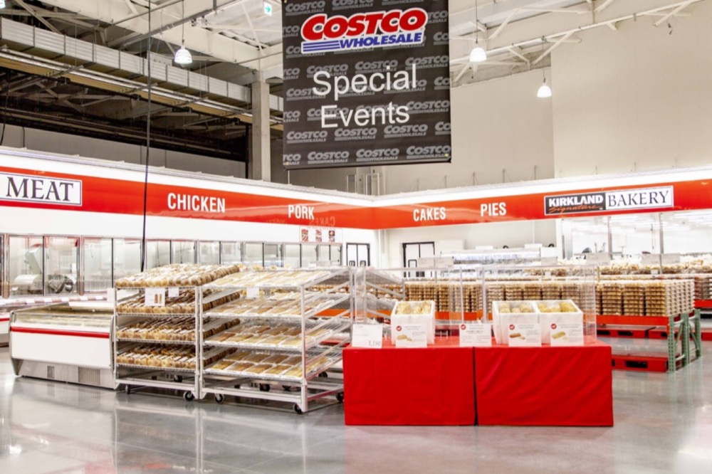
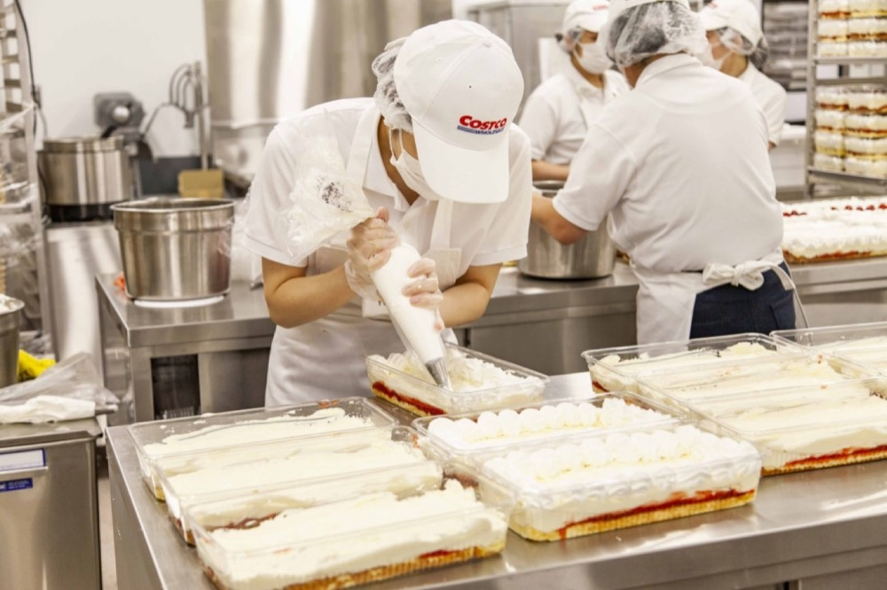
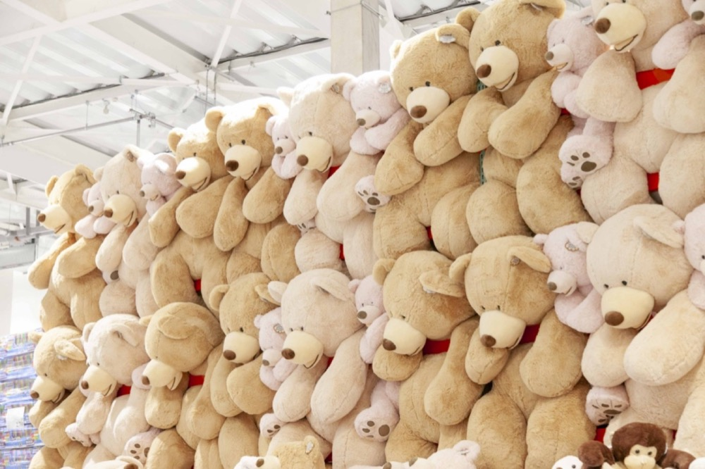
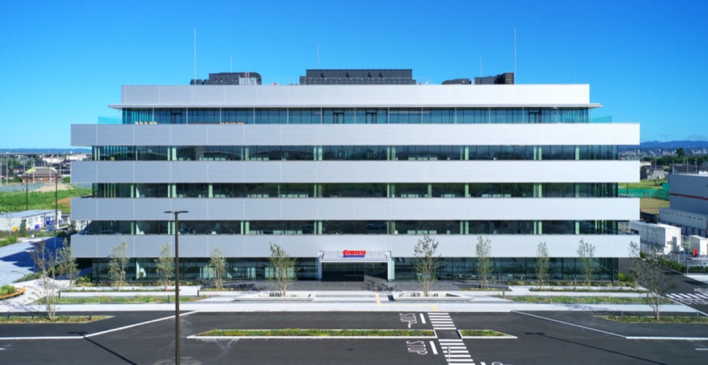

“小売店”の概念を変える異次元の品揃え
コストコホールセールジャパン株式会社
コストコのはじまりは1976年、カリフォルニア州サンディエゴにある飛行機の格納庫を改造して作られた「プライスクラブ」という名前の倉庫店でした。 1983年には「コストコ」の最初の倉庫店がワシントン州シアトルにオープン。 1993年には「コストコ」と「プライスクラブ」が合併し「プライスコストコ」となり、1997年にコストコカンパニーに社名変更。 1999年8月30日には、コストコホールセールコーポレーションに社名変更し米国のナスダックに上場しました。 コストコの本社はワシントン州イサクア、コストコジャパンの本社は千葉県木更津市。
企業サイトを見るTRACK 01
“小売店”の概念を変える異次元の品揃え


コストコホールセールジャパン株式会社は、高品質な商品とサービスを低価格で提供することを理念に掲げている会員制倉庫店だ。本社のアメリカをはじめ、カナダ、オーストラリア、イギリス、そして日本など世界規模で875倉庫店を展開しており、会員数は全世界1億人以上、各倉庫店の取扱い商品は約3,500種類を誇る。
装飾や広告活動などを極力行わずシンプルな経営を行うことで会員様に還元する経営スタイルが特長で、バイヤーが国内外から選び抜いた商品を取り扱い、常に会員様がわくわくするような新しい商品を提供している。
また会員様に「宝探し」を楽しんでもらうために、商品の付加価値にも強いこだわりを持つ。例えば売場に並べられている精肉は飼育から輸送手段、カット方法に至るまで細かな工夫がいくつも施されており、一度も冷凍されていない良質な精肉を低価格で味わえるのが魅力だ。さらには調剤薬局やガスステーション*（ガソリンスタンド）、眼鏡・補聴器センターまで併設しており、世界中の小売店が追従できない総合サービスを提供している。そしてコストコの商品やサービスに万が一満足できない場合への保証として商品保証と年会費保証というシステムを設けていることは、コストコブランドでしか実現できない唯一無二の強みだ。*限定倉庫店のみ
TRACK 02
コロナ禍でも止まらない成長

コストコは1976年、カリフォルニア州で「プライスクラブ」としてスタートしたのが始まりだ。そして1983年に最初の「コストコ」倉庫店がワシントン州でオープン。1993年に「プライスクラブ」と合併し、後にコストコホールセールコーポレーションとなる。1998年4月には日本法人が設立され、1999年に福岡県に第一号店をオープンした。それから拡大を続け、今では日本国内で33倉庫店、アメリカ、カナダ、メキシコに次ぐ第4位の倉庫店数を誇る。
日本との関わりも創業当初から深い。日本各地で自然災害が起これば、倉庫店の安全の確保はもちろんのこと、被災した人々と地域に寄り添い、迅速な物品支援を行うなど、その時にできる最大限の行動や支援をその都度行っている。どのような局面においても、いつでも迅速で的確に対応できる会社でありたいと、常に構え、備えているという。
コロナ禍では、コストコにとっても大きな影響があった。まとめ買いの需要の高まりと在宅勤務の広がりにより、利用者動向が変化し、平日の来店が増加したのだ。特に水やキッチンペーパー、消毒液から家電やAV機器への需要が高まり、オンライン利用者も増加するという結果となった。
